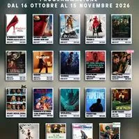

da ven 16 ott a dom 15 nov
Programmazione Cinema CineCity | Dal 16 ottobre al 15 novembre 2026
Scopri la programmazione CineCity a Lignano Sabbiadoro dal 16 ottobre al 15 novembre 2026. Film d’autore, animazione per famiglie, spettacoli dal vivo e tutti i dettagli su orari e biglietti.
 Indicazioni
Indicazioni
- Costi e prenotazioni
- Costo non indicato · Prenotazione non indicata
- Programma
- Programma da verificare. Apri la fonte ufficiale per orari e possibili aggiornamenti.
- In caso di maltempo
- Nessuna indicazione specifica pubblicata.
- Note
- Acquisito automaticamente dalla fonte.
L’EVENTO
Descrizione completa
Nuova programmazione CineCity – Dal 16 ottobre al 15 novembre 2026
Dal 16 ottobre al 15 novembre 2026 il CineCity di Lignano Sabbiadoro propone una programmazione ricca e variegata per tutti i gusti. Sul grande schermo si alterneranno film d’autore, titoli di animazione dedicati alle famiglie e spettacoli dal vivo, offrendo occasioni di intrattenimento per ogni età.
La struttura, situata in Via Arcobaleno 12 , offre la possibilità di acquistare i biglietti direttamente sul posto, prenotarli tramite l’ App Doff Eventi o acquistarli online su cinecitylignano.it .
Per consultare l’intero programma con tutti gli orari e i titoli disponibili, è possibile scaricare la brochure completa sul sito ufficiale: www.cinecitylignano.it .
CineCity Telefono: 334 105 8083 E-mail: cinecity@doffeventi.com Lun – Ven: 17:00 – 20:00 | Sab – Dom: 13:00 – 21:00
IL PROGRAMMA
Programma e orari
Appuntamenti raccolti dalle fonti elencate. Dove manca un orario, non è ancora disponibile in questa scheda.
Programma pubblicato
- Dal 2026-10-16 al 2026-11-15
INFORMAZIONI UTILI
Prima di partire
- Controllare la fonte prima di partire.
ORGANIZZAZIONE